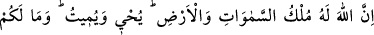
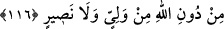

ihtiyaç duydukları ve yalnız başına akıllarıyla kavrayamadıkları iyi ve kötü şeylerin
açıklanmasına olan ihtiyaçları da buna dâhildir. Bu âyette yaptığı gibi insanlara bunları
da açıklamıştır.
116. Göklerin ve yerin mülkü Allah’ındır. O, diriltir ve öldürür. Sizin Allah’tan
başka ne bir dostunuz, ne de yardımcınız vardır.
“Göklerin ve yerin mülkü” mülkiyette hiçbir ortağı olmaksızın “Allah’ındır.”
Celâleddîn Rûmî (k.s.) der ki:
Mülk sahibi oluşta tektir, ona eşit yoktur
Kullarına ondan başka başbuğ yoktur
Yarattıklarına O’ndan başkası sahip değildir
Helâke düşenden başkası onunla ortaklık davası güdemez
“Diriltir ve öldürür.” yâni ölüleri diriltir, dirileri de öldürür. Yeryüzünde,
bedenlerde ve milletlerin kalplerinde hayatı ve ölümü îcâd eder, yaratır.
O’nun dostluğunu ve yardımını önemsemeyip haddi aştığınız takdirde “Sizin Allah’tan
başka ne bir dostunuz, ne de yardımcınız vardır.”
Allah Teâlâ müminleri, akrabaları da olsa müşrikler için mağfiret talebinde
bulunmaktan men edip onlardan tamamen uzak durmalarını emrettikten sonra onlara,
Allah’ın her varlığın mâliki olduğunu, her varlığın işini üzerine aldığını, ona hâkim
olduğunu, velâyet ve nusretin ancak kendi katından geldiğini bildirmiştir. Ta ki
müminler bütün benlikleriyle Allah’a yönelsinler, O’nun dışındakilerden uzak dursunlar.
Yaptıklarında ve yapmadıklarında Allah’tan başka bir maksudları kalmasın.
Burada açıklanması gereken bir husus kaldı ki o da şudur: Âlimlerin büyük bir
kısmının kabul ettiğine göre Hz. Peygamber (a.s.) veda haccında (annesinin mezarının
bulunduğu) Akabetü’l-Hacûn’a uğramış, Allah’tan annesini diriltmesini istemiş, Allah
da annesini diriltmiş, annesi iman etmiş, ardından Allah onun rûhunu geri almıştır.[309]
İnsânü’l-uyûn adlı eserde denilir ki: “Bu haber sâbit olmuşken ve bir çok hadis hâfızı
bunun sahih olduğunu söyleyip karşı çıkanların sözüne iltifat etmemişken: “Öldükten
sonra iman nasıl fayda verir?” denilemez ve buna itiraz edilemez. Çünkü biz deriz ki:
Bu husus Hz. Peygamber’e mahsus özellikler cümlesindendir. Kurtubî’nin sözleri
arasında “Allah Peygamber Efendimiz’in eliyle bir grup ölüyü diriltmiştir.” ifadesi de
vardır. Bu sabit olduğuna göre Hz. Peygamber’in anne babasının diriltildikten sonra
iman etmiş olmalarına mâni yoktur. Üstelik bunun böyle olması Peygamberimiz için